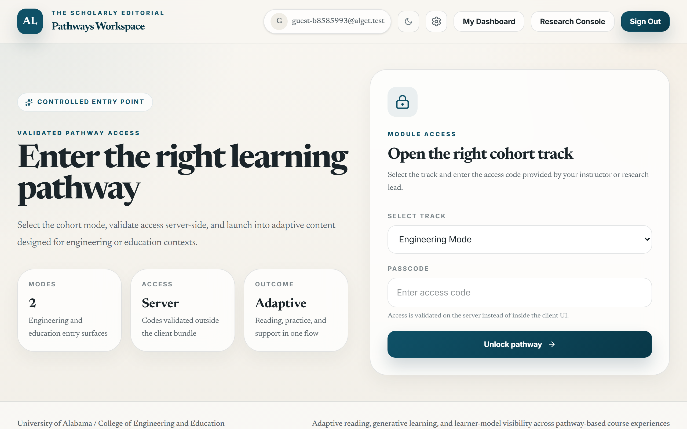
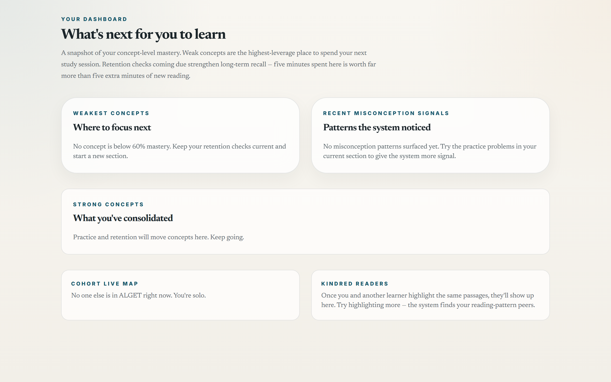
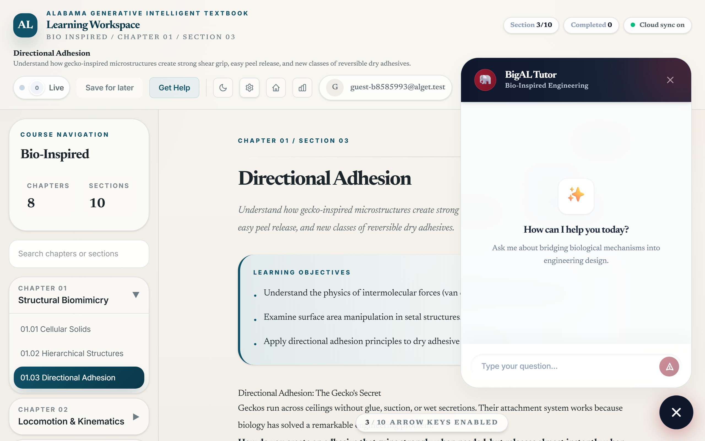
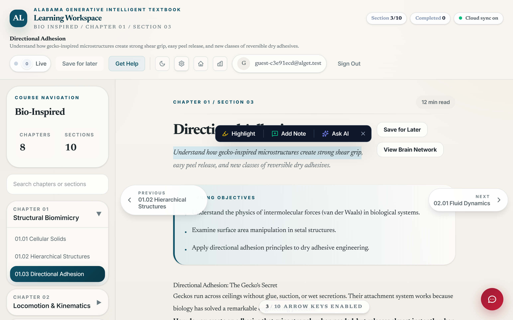

ALGET handbook · Version 2026.04
Learner Guide
Welcome. This is the book you'll spend the next several weeks with. The book is more than text — it watches how you read, how you practice, and how confidently you answer, and it adjusts. This guide is your map for using it well.
1. What ALGET Is
ALGET is an adaptive textbook with an AI tutor. It pairs canonical engineering and instructional-design content with a learning environment that responds to you — your pace, your confusions, your strong concepts, your weak ones. Five courses live inside it: Engineering Statics, Engineering Dynamics, Bio-Inspired Design, Foundations of Instructional Design, and AI & Ethics.
Three commitments shape the experience:
Learning is active. The reading you do here is built around retrieval practice, not passive consumption. Embedded check-ins, practice problems, and reflection prompts appear throughout each section. They're not interruptions. They're how durable understanding gets built (Roediger & Karpicke, 2006; Dunlosky et al., 2013).
You decide what counts as success. The system tracks your mastery, but the meaning of that mastery is yours. The tutor will not give you final answers; it will help you find them. The pace is yours.
2. The Map: How the App Is Laid Out
When you log in you'll see the course chooser. Pick the track you're working in. Each course has chapters; each chapter has modules (sections). A typical session looks like this:
- Open a section → read the narrative, pause at embedded prompts.
- When something stalls, open the right-side rail (the "intelligence rail").
- When you have a longer question, open the floating tutor chat at the bottom-right.
- Try the practice questions.
- Move on, or, when the system suggests it, take a short retention quiz on something from a week ago.

/learn. Locked tiles unlock with the access code your instructor shares.There are three workspaces you'll move between:
- The reading pane. The center column. The textbook itself, with embedded diagrams, interactive quizzes, dynamic scenarios, and worked-example sketches.
- The intelligence rail. Slides in from the right. Four short modes — Explain, Reframe, Practice, and Ask — that give you a different way into the same idea when one path is stuck.
- The tutor chat. A floating bubble in the bottom-right corner. For longer conversations, follow-up questions, or "I just want to talk through this with someone."
A small mastery graph ("brain network") sits above each section showing which concepts you've already touched and how confidently. Click any node to jump to that section.

3. How to Learn Well Here (Six Habits)
Your future self will thank you for these. Each is grounded in a learning-science finding the system was built around.
Read at the speed of comprehension, not the speed of skim
When the embedded check-in shows up, do it. Even if you're sure you know the answer. The act of retrieving it makes it stick. (Karpicke, 2012)
Get something wrong on purpose
Before you read the answer, commit to one. The brief moment of being wrong is when your model of the topic actually updates. (Bjork & Bjork, 2011)
Stop and explain it to no one
After a non-trivial paragraph, look away from the screen and say what you just read in your own words. If you can't, re-read. (Chi et al., 1989)
Don't just read — practice
The practice questions are the assessment and the learning. Some look easy. Do them anyway; the practice is where the schema consolidates.
Trust the schedule
The retention banner appears about a week after you study a concept. Five minutes there roughly doubles three-month recall. (Cepeda et al., 2008)
Ask the tutor; don't beg the tutor
If you ask "what's the answer to question 3?" you'll get a question back. Try: "I think the answer is X because Y, but I'm not sure about the Y step."
4. The Intelligence Rail (Explain / Reframe / Practice / Ask)
The rail opens automatically when the system detects you're stuck (two consecutive incorrect attempts on practice, or a long pause on a problem). You can also open it any time from the side handle. Four tabs:

- Explain. A short, plain-language re-expression of the concept you're stuck on. Shorter than the textbook; written for just-in-time clarity.
- Reframe. The same concept seen from another angle — a diagram, a graph, a real-world scenario, a different worked example. Universal Design for Learning's multiple means of representation in practice.
- Practice. A targeted micro-problem that drills the specific subskill you're shaky on. The system picks it adaptively from the practice bank.
- Ask. A free-form question to the tutor. Hitting Enter here launches the floating tutor chat with your question.
5. The Floating Tutor Chat
This is the conversational AI surface. Different courses give you different domain personas (BigAL for Bio-Inspired Design; a domain tutor for Statics, Dynamics, Instructional Design, and AI Ethics). The chat persists per section: open the same section tomorrow and your previous conversation is still there.

Be specific. "I don't get this" is hard to coach. "I followed the equation up to step 4 but I can't see why we substitute the constraint there" gets you a precise scaffold.
6. Diagnostic and Retention Quizzes
When you start a course, you'll be asked to take a diagnostic — a short pre-test that calibrates where you should begin. Take it seriously and don't guess; the system is using your answers to choose your starting section. If the diagnostic suggests you start three sections in, that's not skipping content — it's because you already have those concepts.
Later, the system schedules retention quizzes. About a week after you finish a section, you'll see a banner offering a 5-minute retention check. The data from these checks tells the system whether your mastery is durable or fading; the data is also what helps the field of educational research understand what works. Taking them is high-leverage for both you and the broader project.
A post-test appears at the end of the course. The combination of pre, post, and retention is what produces a defensible measure of how much you actually learned. That measurement also benefits future cohorts.
6.5 Generative Features You Can Use
ALGET is not only an adaptive textbook — it is a generative intelligent textbook (GIT). The system can produce new learning material on demand, tuned to the concept you're working on, instead of asking you to dig through a fixed bank of content. Five generative surfaces are available to you as a learner:
6.5.1 On-demand explanations and reframes
Click Explain in the rail and the system generates a fresh, plain-language explanation of the current concept, written for your level and constrained by the section's source material (RAG-grounded). Click Reframe and you get the same idea expressed in a different modality — a diagram, a real-world scenario, or an analogy. These are not pre-canned: the explanation is composed at the moment you ask for it, based on what the textbook said, what your mastery looks like, and what previous attempts have shown about your confusions.
6.5.2 On-demand practice tailored to your gap
Click Practice in the rail. The system generates a micro-problem targeted at the specific subskill the adaptive engine thinks is weakest right now. If you keep getting "vector decomposition" wrong, the next generated problem will probe that subskill specifically — not a random pull from the bank.
6.5.3 On-demand simulations and illustrations
For courses that support it (especially Bio-Inspired Design and Engineering Statics/Dynamics), the floating tutor chat can be asked to generate an interactive simulation of the concept. The system writes a self-contained HTML/p5.js sketch, validates the underlying physics through the Validation Agent, and renders it inline. It can also generate conceptual illustrations with annotated UI elements when you ask "draw me X" or "show me what Y looks like".
6.5.4 Multi-agent grounded answers
When you ask a substantive question through the floating chat, your message routes through a multi-agent pipeline. For Bio-Inspired Design specifically, the answer is generated through a Biology → Engineering → Validation → Tutor sequence in which the Validation Agent acts as an internal peer reviewer of the proposed answer. The agents iterate up to two times if the validation fails. This is what makes the response more grounded than a single LLM call would be — the textbook itself disagrees with itself when you ask a question, and shows you the reconciliation.
6.5.5 Generative Lab (instructor / researcher access)
Beyond the rail and chat, there is a Generative Lab at /lab for instructors and researchers. From here, the Curriculum Agent can produce a complete new module — narrative, practice problems, misconceptions — from a biology + engineering context you supply. This is how the textbook continues to grow. As a learner you may see new modules appear that were not present last term; the lab is how that happens.
Why generative matters for you
A static textbook can be very good and still be wrong for you on a specific day. The same concept lands differently when you've just got a worked example fresh in your head than when you're meeting it for the first time. Generative authoring lets the textbook adapt its expression — not only its routing — to your moment of learning. Use the rail and the chat liberally; that's where the textbook turns into a tutor that writes for your situation rather than the average reader.
7. Highlights, Notes, and Annotations
Select any text in the reading pane to highlight it (color-pick from the popover). Add a note if you want to. Highlights persist across sessions and across devices. They are private to you by default; cohort-shared highlights are clearly labeled when present.

8. Privacy and Your Data
ALGET collects three kinds of data about your reading:
- Behavioral telemetry — clicks, scroll depth, time on page, which sections you opened, which problems you tried. No raw answer text, just attempt outcomes.
- Mastery signals — your evolving estimate of how confidently you know each concept, derived from your problems and your retention checks.
- Conversational logs — your chat with the tutor. Stored to your account so you can pick up where you left off.
This data is used to (a) personalize your learning path, (b) help your instructor support the cohort, and (c) when you're enrolled in the research study, contribute to broader research on how people learn with AI tutoring. You can request deletion of all of the above at any time.
What ALGET does not do:
- It does not generate fake peer comments to manufacture social pressure (this was disabled after an LXD audit).
- It does not stream your camera or microphone.
- It does not share your individual data with vendors outside the agreed processors.
If you have specific questions, ask your instructor; the privacy posture is documented in DEPLOYMENT_ENV.md and in the institution's data agreement.
9. When the Tutor Isn't Enough
The tutor is good at: clarifying concepts, walking through the structure of a problem, surfacing your misconceptions, generating practice variations, suggesting study strategies.
The tutor is not good at: replacing a teacher's professional judgment, evaluating something deeply outside its course (it'll decline rather than fake it), being your only social contact in the course, or telling you when you're done.
When to talk to a human:
- You feel discouraged for more than a session or two.
- The tutor's explanation contradicts something your instructor said.
- You want feedback on a creative artifact, a paper, or a design that doesn't fit a clean rubric.
- Something about the course logistics doesn't make sense.
The instructor remains the authority. The tutor is a coach; the instructor is the teacher.
10. FAQ
| Question | Answer |
|---|---|
| My answer was right but the system marked it wrong. | Likely a unit or precision mismatch (relative-tolerance is 1% by default). Re-check the unit or click Ask to have the tutor walk you through the grading. If you're sure it's a real bug, your instructor can flag it. |
| The tutor said something that's wrong. | Tutors can hallucinate. The system has internal validation loops (a Biology→Engineering→Validation debate for bio-inspired specifically) that catch most cases, but not all. Cross-check important claims against the textbook reading itself, and tell your instructor. |
| I want to skip a chapter. | You can navigate freely. The system uses a Bayesian model of your mastery to recommend an order, but it doesn't lock you out. If you're confident in a topic, take the practice problems; if you score well, the system updates and won't push you back. |
| The retention banner showed up but I can't take it now. | It will reappear; durability of memory is what's being checked, so a few-day delay is fine. |
| Can I work offline? | Not currently. A service-worker-based offline mode is on the roadmap (P2-3 in our planning). |
| Where do I learn what each tab in the rail does? | This guide, Section 4. Or run the in-app tour from the Help menu. |
Every feature here was designed with one question in mind: Will this help the learner build durable, transferable understanding, or will it produce compliance that disappears the day after the test? When something in the app feels like it's optimizing for the wrong thing — engagement at the expense of learning, completion at the expense of understanding — tell your instructor. The system is research-instrumented exactly so that this kind of feedback can produce real change.
Good luck. Read slowly, practice often, talk to the tutor like a study partner, and trust the schedule.
References (selected)
- Bjork, R. A., & Bjork, E. L. (2011). Making things hard on yourself, but in a good way: Creating desirable difficulties to enhance learning.
- Cepeda, N. J., Vul, E., Rohrer, D., Wixted, J. T., & Pashler, H. (2008). Spacing effects in learning: A temporal ridgeline of optimal retention.
- Chi, M. T. H., Bassok, M., Lewis, M. W., Reimann, P., & Glaser, R. (1989). Self-explanations: How students study and use examples in learning to solve problems.
- Dunlosky, J., Rawson, K. A., Marsh, E. J., Nathan, M. J., & Willingham, D. T. (2013). Improving students' learning with effective learning techniques.
- Karpicke, J. D. (2012). Retrieval-based learning: Active retrieval promotes meaningful learning.
- Roediger, H. L., & Karpicke, J. D. (2006). The power of testing memory: Basic research and implications for educational practice.
- CAST. (2018). Universal Design for Learning Guidelines version 2.2.